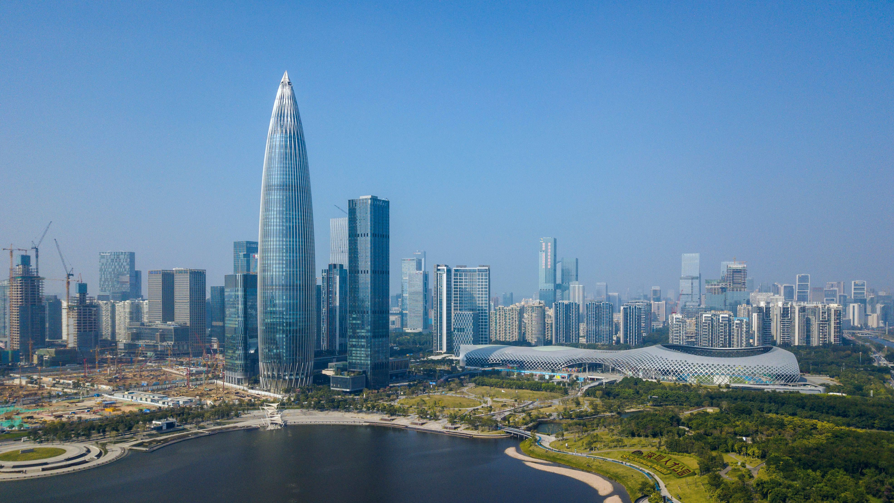

Entry 6 — My Hometown: Shenzhen
Shenzhen is a prefecture-level city in the province of Guangdong, China. A special economic zone, it is located on the east bank of the Pearl River estuary on the central coast of Guangdong, bordering Hong Kong to the south, Dongguan to the north, Huizhou to the northeast, and Macau to the southwest. Shenzhen is where I was born and grew up. I love everything about this city. Before New York, there was Shenzhen.
